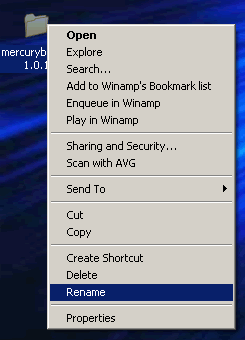

This easy-to-use guide will help guide you through the MercuryBoard installation process. Before you begin
please ensure your server meets the requirements on
this page.
Table of Contents:
Download
The first step is to download the latest version of MercuryBoard.
Which one do I choose?
Windows Users - download the ZIP archive.
*nix Users - download either the GZIP or BZIP archives. Make sure you have a program capable of extracting the archive.
What is an 'archive'?
An 'archive' is a file that contains files and maintains folder structure if necessary. At the time of this writing
(MB version 1.0.1), MercuryBoard uses 189 files within 17 different folders. Also, these archives compress the data
making downloads much smaller. For example, MercuryBoard 1.0.1 is 910kb uncompressed, while the ZIP archive only
takes 324kb.
Now that you have chosen an archive, go to
this page and follow these directions:
Click the link >> Click Save >> Choose 'Desktop' from the drop-down menu >> Click Save
Extracting
Windows Users
After the archive has been downloaded, navigate to the directory it in which it was saved, or minimize all open windows
if you saved it to the desktop. Double click the archive. A new window should open displaying the contents of the archive.
Click and drag the contents to your desktop - this extracts all the files within the archive. You should now have a folder
called "mercuryboard-*.*.*" on your desktop.
Note to Windows 95/98 users: You will need to download a third-party Zip file extractor (if you don't
already have one). A very popular and simple-to-use program is
WinZip.
FTP
What is FTP?
FTP stand for
File Transfer Protocol. It is preferred because it is a fast and efficient means of sending multiple
files to a server.
What program should I use?
If you don't have one already, the MercuryBoard team recommends
SmartFTP,
because of its many features in a small, convenient package.
After following the directions of your FTP program and connecting to your server, you must decide in which folder MercuryBoard
will reside. A common folder name is folder is 'forum' under the root directory - for instance if your server addres is
"http://www.ilovemb.com/", your forum would be located here: "http://www.ilovemb.com/forum/". The most
simple way to do this is to rename the folder you extracted onto your desktop. Right-click the folder, click rename, and
enter your chosen folder name. It is recommended that you only include standard alphanumeric characters. In other words,
only letters and numbers, no spaces or other characters. This will ensure compatibility with every Server and Client OS and
browser.

The next step is the actual upload process. Resize the SmartFTP window so you can see both SmartFTP and the forum folder on
the desktop. Now, click and drag that folder into the file-list pane (as pictured below). This may take a little while, but
that is normal, especially if you are on a dialup connection. As soon as the transfers are done, you may move to the next
section.
Note: you will need this program open for the next section. Don't close it!
CHMOD
This step is not necessary for Windows servers.
What is CHMOD?
Many Windows users are not familiar with this term. CHMOD is a UNIX command that "changes or assigns the mode of a file"
according to the UNIX manual. In more personable terms, it set access levels for different users to read, write, and execute
the file(s). If you want to learn more, read the manual page
here.
We must CHMOD these files and folder to value 755:
- /settings.php
- /install/index.php (this means the 'index.php' file within the 'install' folder)
- /avatars/uploaded (this means the 'uploaded' folder within the 'avatars' folder)
To do this, go to your SmartFTP window (must be connected to the server) and navigate to the folder you just uploaded. Right
click the file 'settings.php' and select CHMOD. A window will pop up. Enter 755 into the permissions box and click 'OK'.
Repeat this process with the other file and folder listed above.
Installer
The last part of the setup is running the install process. Access the folder your forum is located through your browser, for
example, we're going to "http://www.ilovemb.com/forum/".Select 'New Installation' and click continue. Fill in the following
fields with the correct information. If you aren't sure what they are, contact your server administrator or web host to give
you this information. Click continue.
It is strongly recommended that you leave the 'Table Prefix' as it is unless you
know what it does, and/or because you are installing more than one instance of MercuryBoard on one database.
Now you will setup the Administrator account. This is a username and password that you cannot forget, otherwise, you'll lose
the ability to use administrative functions. Also, use a valid email address. This information is stored in your database
and is not sent anywhere else.
This is the last step, and it is
crucial: Go back to SmartFTP and delete the 'install' directory. An easy way to do
this is to right-click the directory and select 'Delete'. Confirm the prompt, and you're done. Have fun with MercuryBoard,
and if you have any problems with this process, post in our
support forum.